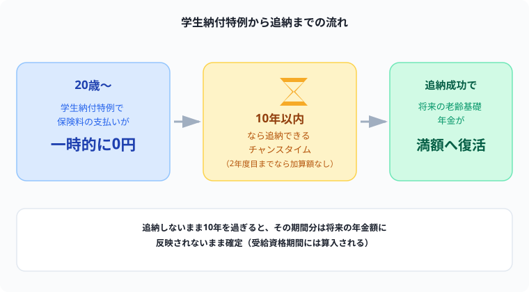

大学生の国民年金「学生納付特例制度」とは？追納すべきかも解説【2026年版】
20歳になった瞬間、日本年金機構から届く国民年金の書類を見て「え、学生なのにこんな金額払うの！？」と固まった経験、ありませんか？僕もまさにそうでした（笑）。でも実はちゃんと「学生納付特例制度」という猶予の仕組みがあって、しかも後から払い戻す（追納する）選択肢もあるんです。
ただこれ、「免除」だと誤解している人がめちゃくちゃ多いんです。ここを間違えたまま放置すると、将来もらえる年金額が地味に減ります。簿記の勉強と同じで、制度の仕組みを正確に理解しておくだけで損を避けられるので、今日はここを一緒に整理していきましょう！
記事の末尾のほうにある【いいねボタン】をポチッと押してもらえると、僕の毎日の勉強と執筆のモチベーションになるので、めちゃくちゃ嬉しいです！
結論：学生納付特例制度は「免除」ではなく「猶予」
先に結論を言うと、学生納付特例制度は国民年金保険料の支払いが先送りされる猶予の制度であり、支払い義務そのものがなくなる「免除」ではありません。この違いを知らないまま放置していると、将来受け取れる年金額が減った状態のまま確定してしまいます。
学生納付特例制度の対象者・条件
20歳以上の大学・短期大学・高等学校・専修学校等の学生が対象です。ただし、誰でも無条件で使えるわけではなく、所得基準があります。
申請方法
- 市区町村の国民年金担当窓口
- 年金事務所
- 在学中の学校（学生課等で受付している場合）
必要書類は在学証明書または学生証の写し、基礎年金番号がわかるもの（年金手帳・基礎年金番号通知書等）またはマイナンバーカードです。マイナポータル経由での電子申請にも対応しています。申請は年度ごとに必要なので、毎年忘れずに手続きすることが大切です。

猶予期間中の扱い（3つのポイント）
老齢基礎年金を受け取るには原則10年以上の納付済期間等が必要ですが、学生納付特例を受けた期間はこの10年にカウントされます。「年金がもらえなくなる」という心配は不要です。
ここが最重要ポイントです。追納しない限り、猶予を受けた期間は将来もらえる老齢基礎年金の「金額」には反映されません。受給資格はあっても、金額はその分少なくなります。
猶予期間中に不慮の事故や病気で障害を負った場合でも、未納扱いにはならず、保険料納付済期間と同様の扱いで障害基礎年金・遺族基礎年金の対象になります。ここは学生納付特例の大きな安心材料です。
追納制度の仕組み
学生納付特例で猶予された保険料は、承認された月から10年以内であれば、さかのぼって納付（追納）できます。
| 追納のタイミング | 金額 |
|---|---|
| 猶予の翌年度・翌々年度（2年度目まで） | 加算なし（当時の保険料額のまま） |
| 3年度目以降〜10年以内 | 経過期間に応じた加算額が上乗せ |
| 10年超 | 追納不可（その期間は年金額に反映されないまま確定） |
追納すべきかどうかの判断基準
追納は義務ではないため、「した方がいい人」と「今すぐ無理にしなくていい人」がいます。
就職して収入が安定したタイミングは、加算額がつく前（2年度目まで）に追納しやすいベストな時期です。追納した保険料は社会保険料控除の対象になり、その年の所得税・住民税が軽減される効果もあります。
追納すれば、その期間分が満額に近い形で将来の年金額に反映されます。長期的な受給額を重視するなら、無理のない範囲で追納しておく価値はあります。
学生時代や就職直後で家計にまだ余裕がない場合、焦って追納する必要はありません。10年という猶予があるので、加算がつかない2年度目までを目安に、家計が安定してから検討すれば十分です。
まとめ
- 学生納付特例制度は「免除」ではなく「猶予」。支払いが先送りされるだけで消えるわけではない
- 所得基準の審査対象は学生本人のみ。親の所得は関係ない
- 猶予期間は受給資格期間には算入されるが、追納しないと年金額には反映されない
- 追納は承認から10年以内。2年度目までなら加算額なしで納付できる
- 猶予期間中でも障害・遺族基礎年金の対象にはなるため、万が一の保障は途切れない
⚔ 制度を正しく理解して、次は資格の勉強も一歩ずつ
お金の制度と同じで、資格の勉強も「知らずに損する」ことが一番もったいないです。Study Questなら毎日の勉強時間を記録しながら、コツコツ積み上げをゲーム感覚で継続できます。完全無料。
無料で始める →「免除だと思ってたのに違った」は、知らないと普通に起こりうる話だよ。制度を正しく理解して、追納するかどうかも自分で選べる状態にしておくのが一番大事だね。
ここまで読んでくれてありがとう！もしこの記事が役に立ったら、僕の毎日の勉強と執筆のモチベーション維持のために、この下にある【いいねボタン】をポチッと押してもらえると、めちゃくちゃ励みになるよ！